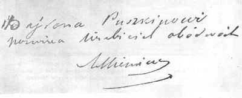
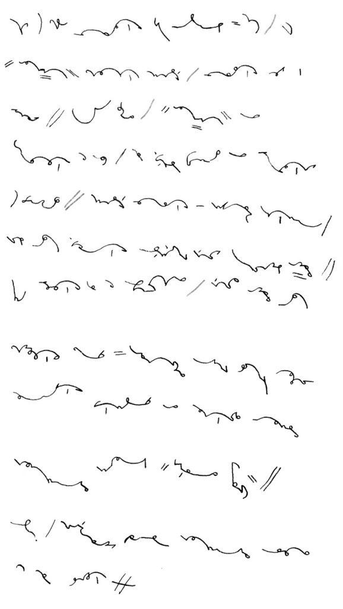
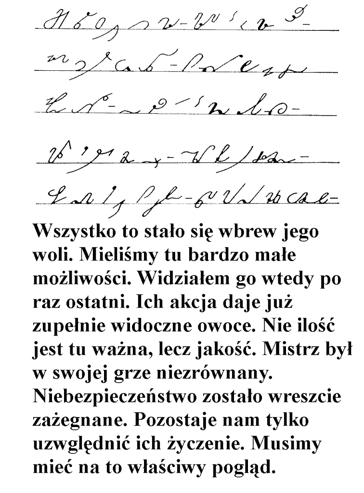

International
InternationalJaki system dla języka polskiego?
2011-04-18 | autor: flamenco108**Straciłem pierwszą wersję, piszę drugi raz:WRRR!
Pismo, mimo starań producentów elektroniki, wciąż nie chce wyjść z użycia. Kartka i długopis to wciąż najprostsza technika przekazywania, lub przechowywania danych. Jednak w wyglądzie pisma, od czasu wynalezienia polskich systemów stenograficznych, zaszły pewne zmiany.
Odręczne pismo Kościuszki (Tadeusza)
Pismo kursywne dostosowuje się do narzędzi pisarskich i do zapotrzebowania. W czasach, gdy nie było maszyn do pisania, ani łatwo dostępnego druku, wiele dokumentów sporządzano odręcznie i tak już pozostawały. Ważne zatem było, aby adepci biznesu, czy też administracji państwowej, pisali w sposób czytelny także dla innych. W XIX wieku zatem powstały zunifikowane, kaligraficzne literki i wszystkich przyuczano to pisania pod jeden sztrychulec. Zasady te, z biegiem czasu i postępu technicznego, stopniowo się rozluźniały.
Pismo człowieka kształconego w latach 30-tych XXw.
Dziś jednak, choć przecież cały czas uczymy się pisać w szkole, literki się zmieniły. Zmieniły się narzędzia pisarskie, pióro wyszło z użycia zastąpione przez długopis i różnego rodzaju pisaki, a współcześni pedagodzy, po namyśle, jaki towarzyszy również twórcom systemów stenograficznych, wyrysowali nowe literki, do których dzieci są wdrażane. Nie mają one tak wymyślnych pętelek, takich łączników, pismo nie jest pochylone. Ale przede wszystkim: nie ma wymagania pisania kaligraficznego. Niektórzy uważają, że niesłusznie. Tak czy owak, każdy dziś, kto jeszcze nie zapomniał sztuki odręcznego pisania, jak tylko uciekł ze szkoły (przecież większości ostatecznie i tak potrzebny jest tylko podpis, imię i nazwisko czytelnie, i ewentualnie data, żeby móc wypełniać formularze w urzędach), ten może realizować swój charakter i temperament przez własny, osobisty charakter pisma.

Upowszechnienie się komputerów, a przede wszystkim Internetu z emailem, spowodowało spadek zużycia papieru do odręcznego pisania. Coraz więcej ludzi woli klepać w klawisze, niż mozolnie wypisywać długopisem “trzy kilo marchewki, ale świeżej, mleko i wiesz, co…”. Przez klawisze coraz rzadziej mamy okazję używać z takim trudem wyuczonego w szkole pisma odręcznego. Zatem też coraz częściej posługujemy się literami “drukowanymi”, choć tak jest o wiele wolniej i ręka szybciej się męczy. Ja sam, żeby daleko nie szukać, dopiero, gdy zacząłem nowe studia, przypomniałem sobie, jak się pisze “pisanymi”. Ale to już nie to samo pismo. Literki zaczynają stać oddzielnie, stają się bardziej blokowe.
Pismo odręczne osoby nawykłej do pisania na klawiaturze
Jaki zatem powinien być system stenograficzny dla czasów współczesnych? Zgrabne łuczki i pętelki systemów kursywnych z XIX wieku stawiają wysokie wymagania dzisiejszym ludziom, których nie przyuczono do kaligrafii.
O jakości systemu decyduje kilka wzajemnie od siebie zależnych parametrów, które poszeregować należy wedle ich ważności dla twórcy systemu. Na pierwszym miejscu zawsze znajdzie się praktyczność systemu i to na poziomie elementarnym - czyli jego krótkość i łatwość pisania, czytelność stenogramu z uwzględnieniem właściwości języka polskiego. Drugie miejsce zająć powinna znaleźć się łatwość uczenia, a zatem jego prostota, logiczność i spójność. Na trzecie miejsce położyć trzeba względy estetyczne, jak wygląd znaków i całego stenogramu oraz takie jak aktualność systemu, dopasowanie do współczesnego charakteru pisma.
Pamiętać należy, że zmiana jednego z tych parametrów automatycznie skutkować musi “przesunięciami suwaków” dla innych parametrów. Zatem położenie większego nacisku na prostotę i logiczność systemu, a zatem jak najmniejszą liczbę odstępstw od reguły, spowoduje zmniejszenie tempa pisania oraz biegłości i krótkości ciągów piśmiennych. Podobnie będzie, jeżeli większy nacisk położymy na większą zgodność z brzmieniem języka.
Z przeszłości przychodzą do nas systemy następujących typów:

Geometryczny - przykładem niech będzie nasz NPPSv01, lub np. system Pitmana. Oparty o proste odcinki i łuki. Już wcześniej wspomniałem, że (mogę się mylić, na co wskazują przykłady, że młodzi ludzie na własny użytek adaptują dziś systemy geometryczne), niezbyt się nadaje do języka polskiego - tzn. oczywiście, da się pisać, w końcu sami kiedyś stworzyliśmy NPPSv01 z No-qankiem, a No-qanek nawet dalej go rozwija, jednak uważam, że można znaleźć lepsze rozwiązanie, zgrabniejsze, a przede wszystkim - czytelniejsze.

Systemy geometryczne są proste formalnie i graficznie, a zatem łatwe do nauki, szczególnie na samym początku. Ich znaki na tyle się różnią od tradycyjnych liter, że umysł niejako musi uczyć się pisać od nowa, zatem nie pojawia się konflikt odruchów. Jednak w stosunku do fonetyki języka polskiego są ubogie w materiał graficzny, z którego można utworzyć znaki, szczególnie, kiedy zmieniły się narzędzia i nie ma możliwości pisania grubszymi lub cieńszymi kreskami.

Alfabet Polińskiego
Kursywny - przykładem niech będzie system Polińskiego, oparty o XIXwieczną technikę pisania. Przez ponad 100 lat rozwoju znakomicie dostosowany do języka polskiego. Pozwala na osiągnięcie prędkości pozwalającej pisać szybciej, niż ktoś zdolny jest mówić.

A jednak trudny technicznie i formalnie, a przede wszystkim - wymagający dyscypliny kaligraficznej, gdyż dzięki wielkiemu bogactwu materiału graficznego pozwala twórcom na dostosowanie do wszelkich niuansów języka. Czyni go to o wiele wygodniejszym i (jak sądzę) przyjemniejszym w odczycie. Jednak przez to staje się trudniejszy i bardziej wymagający w nauce. Przede wszystkim jednak - jego forma jest ściśle uzależniona od narzędzi i techniki pisania, a zatem dziś dostępne systemy kursywne wymagają uwspółcześnienia.
Alfabet Gregga
Semi-geometryczny - przykładem niech będzie system Gregga, gdyż niewiele powstało takich metod. Linie ma jednej grubości, zatem na tym polu dostosowany do współczesności. Jednak przenosi wady systemów geometrycznych - dla wielosylabowych, powydłużanych (;-)) słów języka polskiego jest niezbyt wygodny, schodzi z linii pisma i leci gdzieś, na skos, przez kartkę, czego autor przekładu nie pokazał, prezentując głównie słowa 2- i 3-sylabowe.
Przykładowe słówka w systemie Gregga
Technika pisania zbliża go do systemów kursywnych, a zatem jest bardziej biegły i zapewne pozwoli pisać szybciej niż systemem geometrycznym. Jednak jest w niej, podobnie jak system Polińskiego (o czym wcześniej nie wspomniałem), zarezerwowany dla praworęcznych (a przecież dziś już nikt nie zmusza leworęcznych do pisania prawą ręką, więc ich odsetek rośnie i należy ich uwzględnić w rachubach), bowiem pismo pędzi daleko w prawo. Jego wadą (powinienem chyba opublikować omówienie polskiej wersji tego systemu) jest też konieczność zniekształcania brzmienia słów, nie zawsze zgodnie z duchem języka (np. **e, y **oraz i mają ten sam znak), czego może w jakimś hipotetycznym, innym systemie dałoby się uniknąć. A dyscypliny kaligraficznej wymaga, wbrew pozorom, nie mniejszej, niż systemy kursywne.
Przykład systemu Teeline - Modlitwa Pańska
W latach 70-tych XX wieku James Hill opublikował system Teeline - na bazie swoich doświadczeń jako stenografa i nauczyciela systemu Pitmana i przemyśleń, co do współczesnych potrzeb, stworzył coś, co nazwałbym systemem alfabetycznym, gdyby nie fakt, że jest nim tylko pozornie. Specjaliści od dzielenia wszystkiego na typy zaliczają Teeline do grupy systemów alfabetycznych, ale moim zdaniem niesłusznie.
Próbka Teeline po polsku
Jednak nie da się wprost przełożyć Teeline na polski - nasz język ma wyrazy złożone z wielu sylab i takie powydłużane i pokomplikowane wyrażenia wcale nie zapisują się wdzięcznie w tym systemie. Teeline został zaprojektowany dla języka, w którym większość najczęściej używanych słów ma jedną, najwyżej dwie sylaby. Do tego Teeline dobrze się pisze tylko ignorując samogłoski, a to w języku polskim bardzo utrudnia czytanie.
Zatem jaki powinien być system stenograficzny czasów współczesnych? Z jednej strony musi być z pewnością łatwy do wyuczenia się i niewymagający kaligraficznie, bo dziś nikomu nie chce się czekać długo na rezultaty włożonego wysiłku. Z drugiej strony rozpowszechnienie czcionki drukowanej zmniejsza nasze umiejętności deszyfracji różnych bazgrołów, zatem winien być czytelny. Parametry te znacząco wpływają na zmniejszenie tempa pisania. Odbierają zatem punkty systemom geometrycznym i kursywnym. Dyscyplina kaligraficzna i wymóg dostępności dla leworęcznych przekreśla też istniejący system semi-geometryczny. Czy trzeba wymyślać coś nowego?
Proponuję wyodrębnić nowy typ systemów stenograficznych - półkursywnych. Tak jak semi-geometryczne są geometryczne w teorii i kursywne w pisaniu, tak półkursywne mają być geometryczne w pisaniu, lecz kursywne w teorii.
Dziś nie potrzeba już prawie systemów parlamentarnych, pozwalających pisać z prędkością mowy. Wystarczy, że pomogą zrobić notatki z wykładów/lekcji i nawet długi czas pisania nie sprawi, że ręka odpadnie. Czyli nacisk można położyć bardziej na systemy korespondencyjne, notatkowe, kupieckie
Współczesny system musi być:
- Łatwy w nauce
- Dostępny dla lewo- i praworęcznych
- Odporny na bazgroły (czytelny)
- Półkursywny (znaki blokowe, ale nawiązujące do nawyków piszącej ręki, nie geometryczne)
2011-04-18 autor: flamenco108